An open house of study, online and around the corner: classes from leading rabbis, minyanim and prayer times, and a live map of in-person classes in your own neighbourhood - with registration built in.
Torah content today is scattered between YouTube, WhatsApp groups and notices on a synagogue board. Someone looking for a class can't find out what's on this week in their own neighbourhood, and a rabbi who wants to spread a class depends on platforms that were never built for him.
Midrash.live joins the two worlds in one product: a curated video library and a live map of the physical community - classes, synagogues, minyanim and prayer times - with a studio that lets every rabbi run his own page.
What separates this from a video site. An in-person class is an event with a place, a time, an audience and a registration, so it has its own data model rather than being squeezed into a video. The list and the calendar are two views of the same events, filtered by the same location.
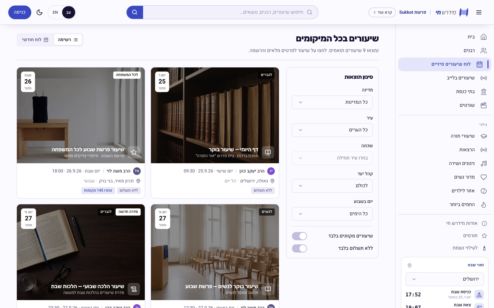
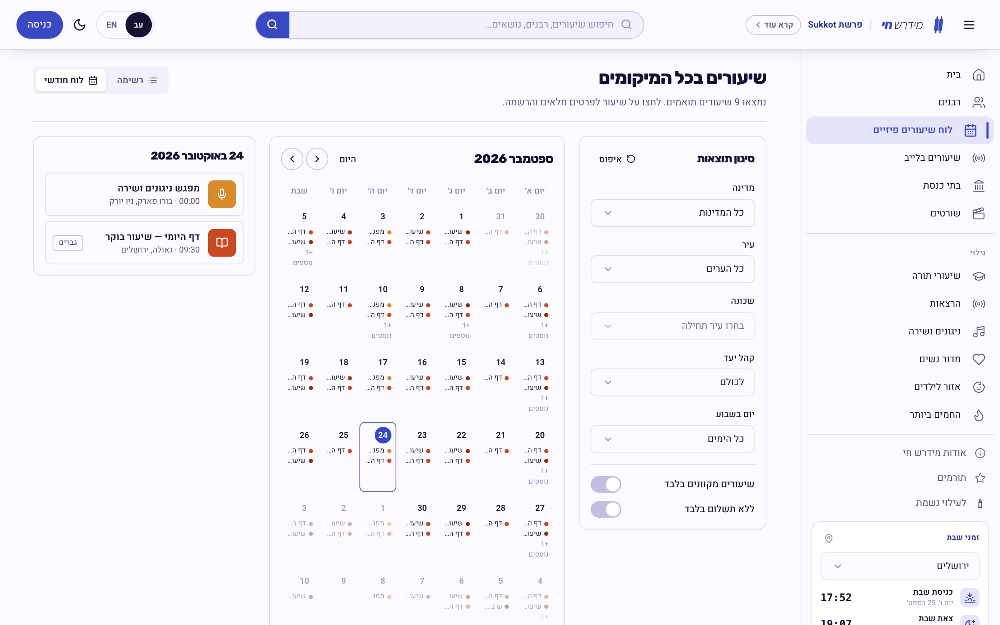
A class page answers the three questions that decide attendance - where, when, and is it for me - and ends in a registration form, not a share button. Synagogues get the same treatment: minyanim by nusach and time, searchable by the same neighbourhood.
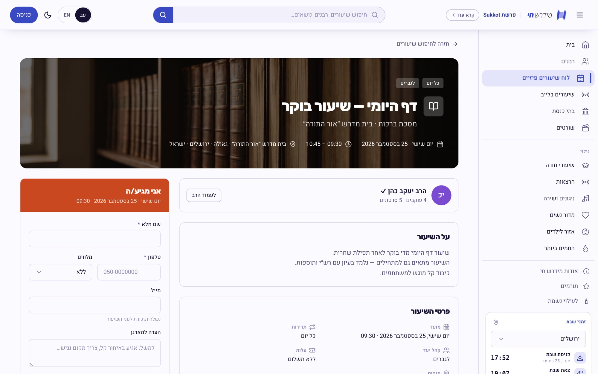
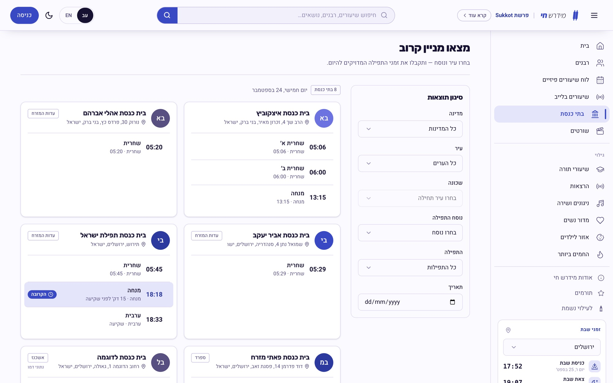
Every rabbi gets a channel with the sections he chooses to show - videos, shorts, melodies, schedule and about. The rabbi controls what appears, so someone who only teaches Daf Yomi doesn't get a page full of empty tabs.
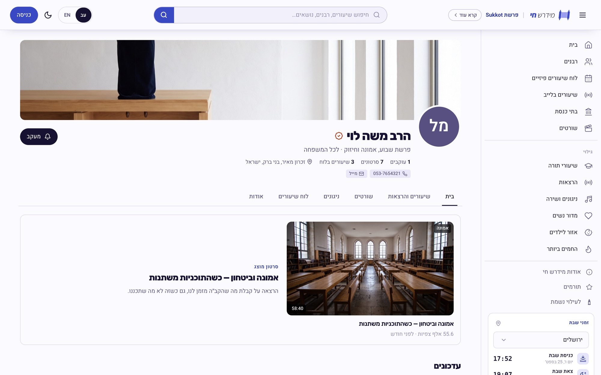
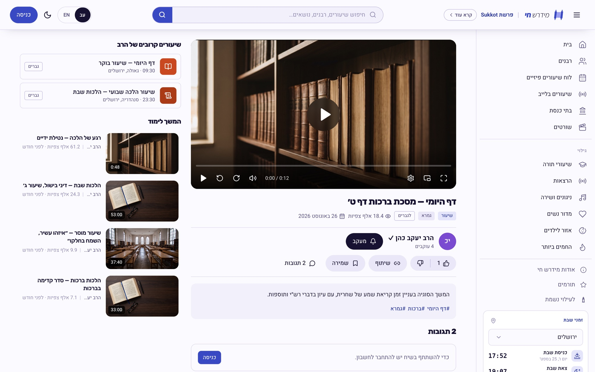
Short-form for the commute, a children's area with its own tone, and Midrash+ - an optional membership, “all of the Torah, without interruptions”, that funds the platform.
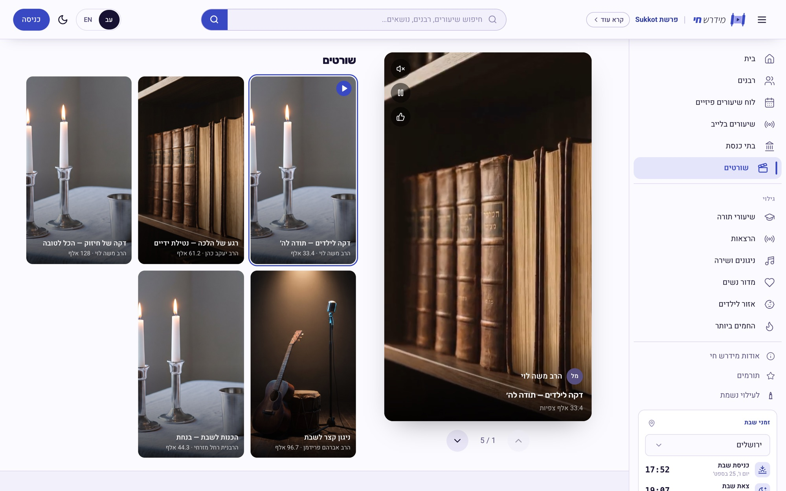
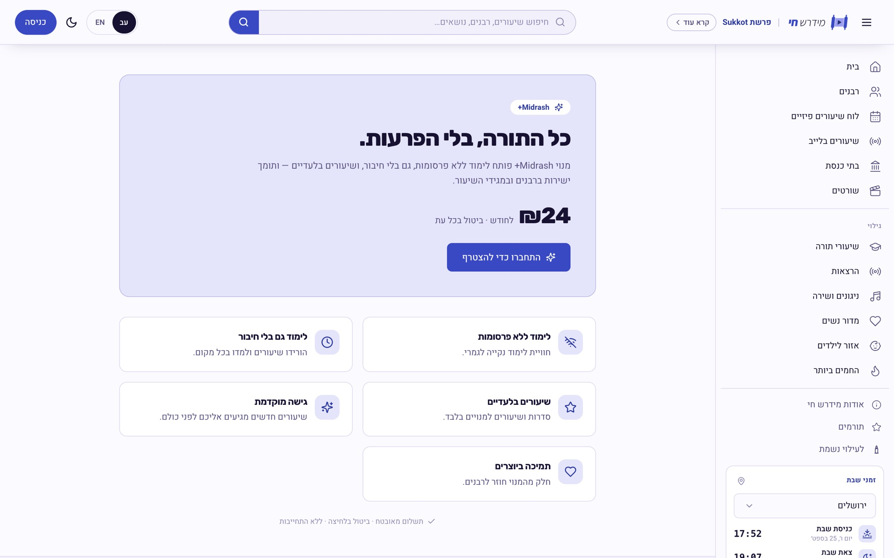
Classes are shared as links in WhatsApp groups, so mobile is the primary layout, not a squeeze of the desktop one: a bottom tab bar for the five things people come for, and the location search right under the thumb.
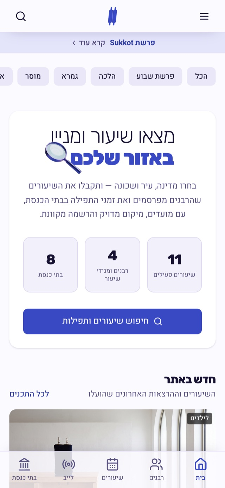
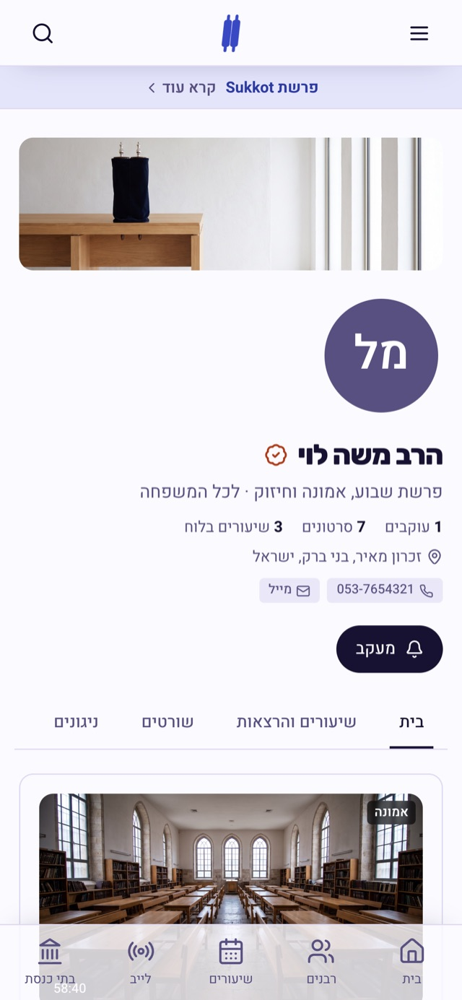
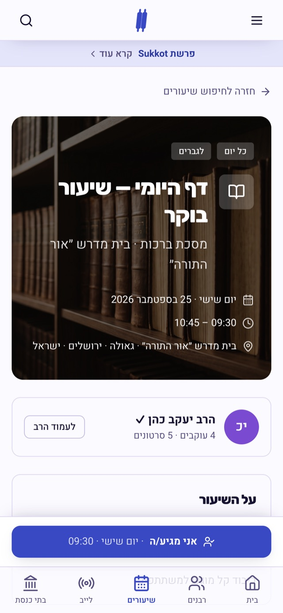
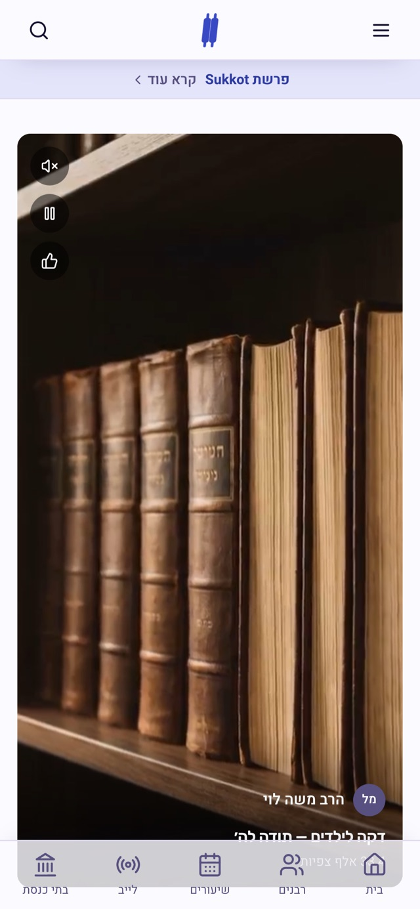
The mark is a Torah scroll with a play button where the text would be - the whole idea in one shape. It holds in both themes, and the pre-launch page carries it alone, with one action: a free year for anyone who signs up early.
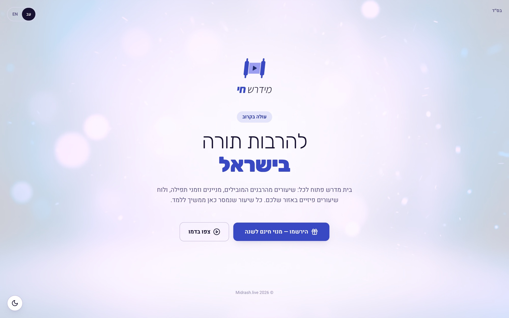
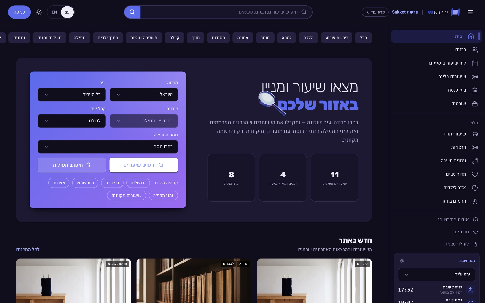